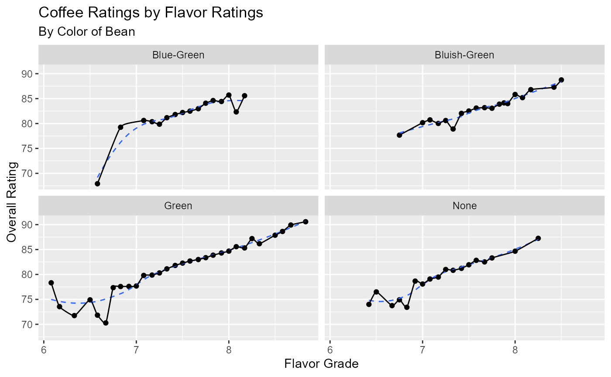
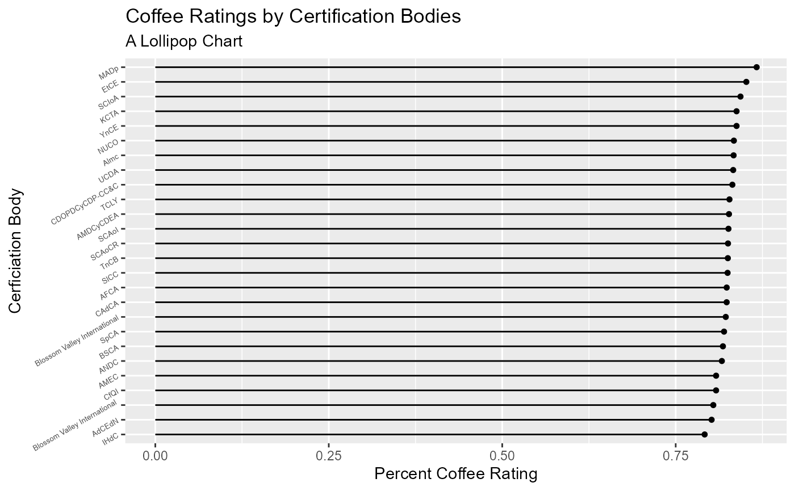
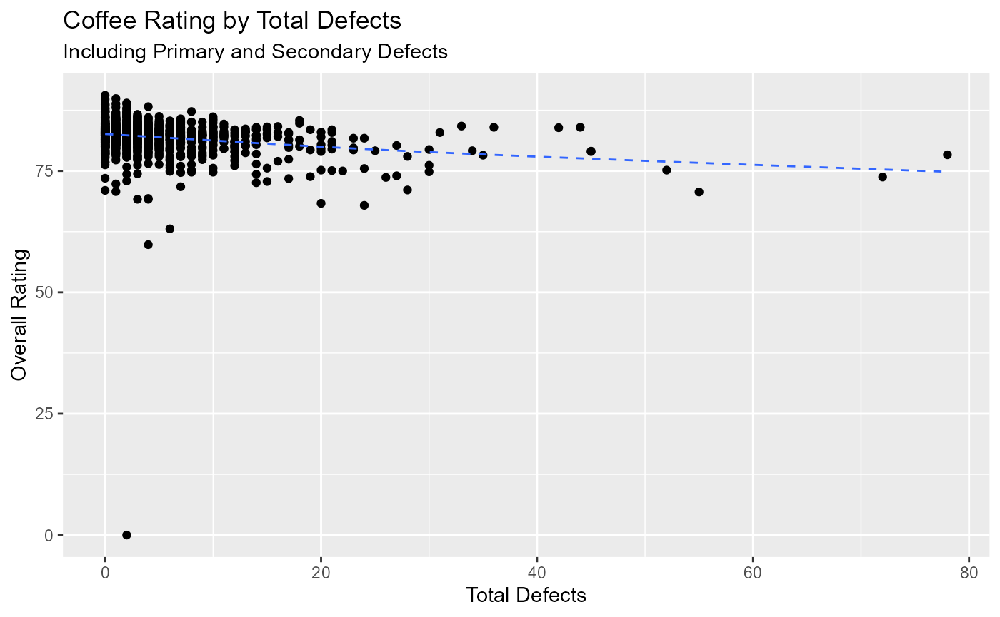

## Warning: package 'tidytuesdayR' was built under R version 4.2.2## Warning: package 'ggplot2' was built under R version 4.2.2##
## Attaching package: 'dplyr'## The following objects are masked from 'package:stats':
##
## filter, lag## The following objects are masked from 'package:base':
##
## intersect, setdiff, setequal, union## Registered S3 methods overwritten by 'ggalt':
## method from
## grid.draw.absoluteGrob ggplot2
## grobHeight.absoluteGrob ggplot2
## grobWidth.absoluteGrob ggplot2
## grobX.absoluteGrob ggplot2
## grobY.absoluteGrob ggplot2##
## Attaching package: 'scales'## The following object is masked from 'package:purrr':
##
## discard
if(!dir.exists("../data")){
dir.create("../data")
}
if(!file.exists("../data/coffee.RDS")) {
tuesdata <- tt_load("2020-07-07")
coffee <- tuesdata$coffee_ratings
saveRDS(coffee, file = "../data/coffee.RDS")
}
coffee <- readRDS("../data/coffee.RDS")Goal
The question I’m hoping to answer is: What factors are associated with high graded coffee beans?
The data comes from TidyTuesday (2020-07-07) The data dictionary is located here.
Coffee Rating and Flavor Grade
First we look at coffee ratings as it relates to the flavor grade and color of the bean.
coffee_flv_bal <- coffee %>%
distinct() %>%
select(total_cup_points, flavor, balance, color) %>%
filter(balance > 5.0) %>%
drop_na() %>%
group_by(flavor, color) %>%
summarise(rating_means = mean(total_cup_points))## `summarise()` has grouped output by 'flavor'. You can override using the
## `.groups` argument.
ggplot(coffee_flv_bal, aes(x = flavor, y = rating_means)) +
facet_wrap(vars(color)) +
geom_point() +
geom_smooth(se=FALSE, linetype="dashed", size=0.5) +
geom_xspline(size=0.5) +
labs(x = "Flavor Grade",
y = "Overall Rating",
title = "Coffee Ratings by Flavor Ratings",
subtitle = "By Color of Bean")## Warning: Using `size` aesthetic for lines was deprecated in ggplot2 3.4.0.
## ℹ Please use `linewidth` instead.## `geom_smooth()` using method = 'loess' and formula = 'y ~ x'## Warning: Using the `size` aesthetic in this geom was deprecated in ggplot2 3.4.0.
## ℹ Please use `linewidth` in the `default_aes` field and elsewhere instead.
While the blue-ish green and uncolored beans have a generally linear increase in bean rating as flavor grade increases, the blue-green beans seem to increase drastically in rating at around a flavor grade of 6.5-7 (out of 10), while the green beans seem to have a dip in overall rating around a flavor grade of 6 and 7.
Coffee Rating on Certification Bodies
coffee_cert_rate <- coffee %>%
select(total_cup_points, certification_body) %>%
group_by(certification_body) %>%
summarise(rating_means = mean(total_cup_points))
coffee_cert_rate$percent <- as.double(map(coffee_cert_rate$rating_means, function(x) x/100))
ggplot(coffee_cert_rate, aes(y = reorder(certification_body, percent), x = percent)) +
geom_lollipop(horizontal = TRUE) +
theme(axis.text.y = element_text(size=5, angle=30)) +
scale_y_discrete(label = abbreviate) +
labs(x = "Percent Coffee Rating",
y = "Cerficiation Body",
title = "Coffee Ratings by Certification Bodies",
subtitle = "A Lollipop Chart")## Warning: Using the `size` aesthietic with geom_segment was deprecated in ggplot2 3.4.0.
## ℹ Please use the `linewidth` aesthetic instead.## Warning in labels(...): abbreviate used with non-ASCII chars
Next we look at coffee ratings based on certification bodies. Generally, it doesn’t seem that the certification body affects a coffee bean’s rating too much. METAD Agricultural Development plc seems to rate coffee beans the highest on average, and Instuto Hondereno del Cafe seems to rate coffee bean’s the lowest on average (abbreviations used for the sake of space).
Coffee Rating and Defects
defects <- coffee %>%
select(category_one_defects, category_two_defects) %>%
drop_na()
defect_total <- pmap_dbl(defects, .f = sum)
defects$dfct_tot <- defect_total
coffee_dfct <- data.frame(defects, coffee$total_cup_points)
ggplot(coffee_dfct, aes(x = dfct_tot, y = coffee.total_cup_points)) +
geom_point() +
geom_smooth(se=FALSE, linetype="dashed", size=0.5) +
labs(x = "Total Defects",
y = "Overall Rating",
title = "Coffee Rating by Total Defects",
subtitle = "Including Primary and Secondary Defects")## `geom_smooth()` using method = 'gam' and formula = 'y ~ s(x, bs = "cs")'
Finally, we look at the rating based on the number of defects. It seems the generally, the more defects a bean has the lower its rating, which is to be expected.